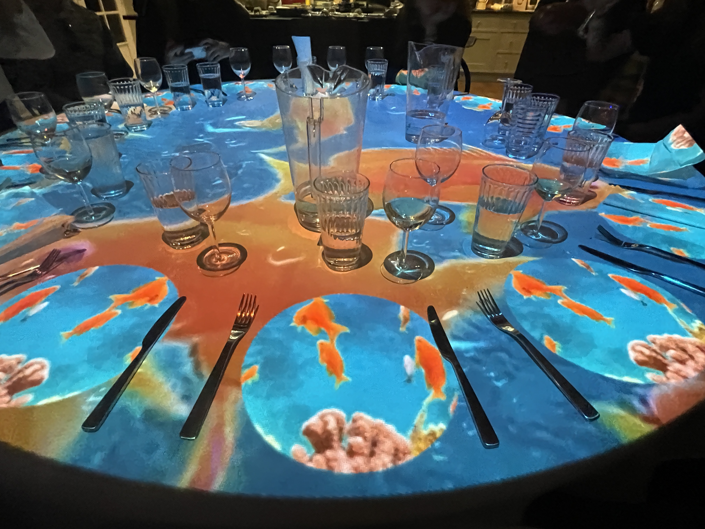

02 / Portfolio
Immersive Dining
Immersive Dining Experience Projection
Projection mapping for dining events.
A collaboration with private chef Pratap Chahal @thathungrychef, visual projections themed to his immersive menu and dishes were played onto the dining area, in sync with audio, and scent dispensers. Controlled by a bespoke show control system in Touchdesigner.
